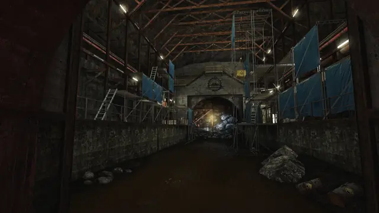
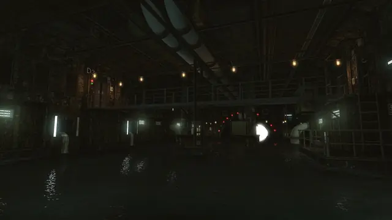
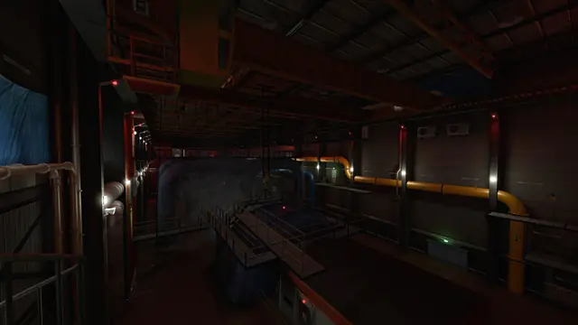
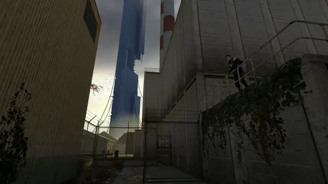
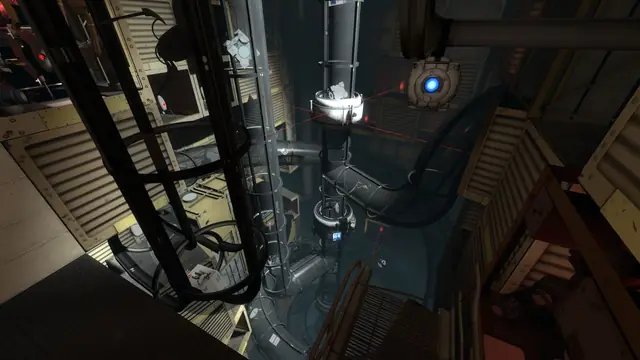
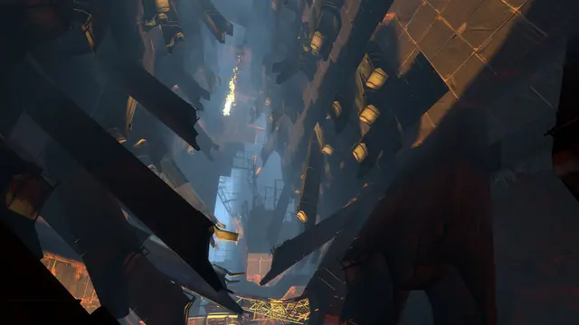
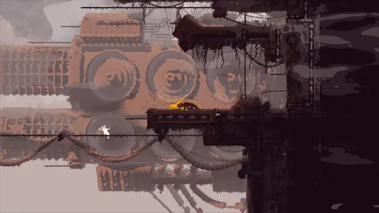
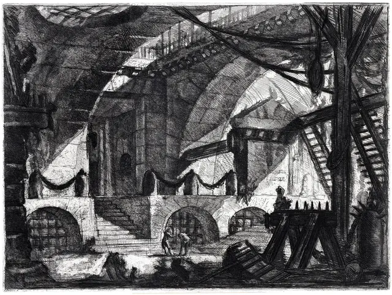
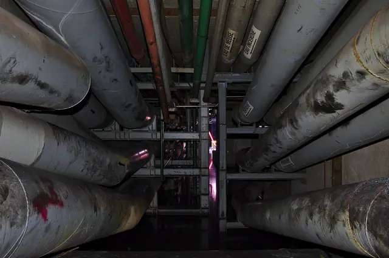
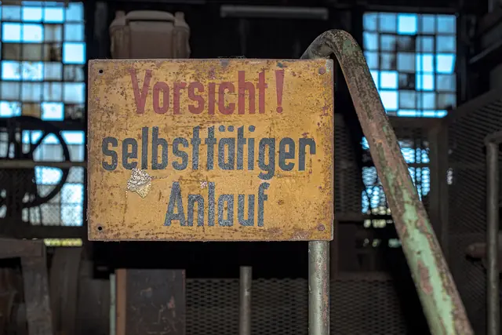

The feel
Industrial decay is a workplace after "the day the factory stopped": production lines dormant, boxes left unsent, the electricity cut off.1 Urban explorers seek these places out: their hobby is "recreational trespass in the built environment", calling for "a taste for decay, a fascination with infrastructure", and its sites include disused factories and hospitals, bunkers, bridges and storm drains.2 Inside, decay mocks the old order: ceilings fall, wiring, plumbing, girders and machine parts tangle together, and the soundscape is full of creaks, wind, flurries of birds and echoes.1
It works because a ruin hints at a story without telling it: its fragments "suggest the beginnings of sentences", but the whole tale can never be told.1 Harvey Smith and Matthias Worch show how a game level can do the same, letting players piece together what happened in a place and what it was for, until "the world speaks for itself as the player moves through it".3 INFRA builds a whole game on it: you play a structural analyst sent into abandoned factories and tunnels to find technical documents and photograph cracks.4
- rusted
- flooded
- echoing
- trespassing
- forgotten
- dripping
Where it comes from
Piranesi's imaginary prisons, first published as 14 etchings in 1749 and 1750, already set small figures among towering piers and staircases, and his 1761 reworking added wheels, pulleys, levers, cables and ropes.5 The modern look comes from deindustrialisation: as Britain moved to a service economy in the 1980s, many remnants of its 19th-century industry were swept away, and in poorer areas old industrial buildings were left to decay.1 Detroit's ruins were left by decades of deindustrialisation, housing discrimination and suburbanisation.6 Urban exploration emerged in the late 1970s, and Detroit became its world mecca for derelict and ruined places.2 Photo books such as Andrew Moore's Detroit Disassembled and Yves Marchand and Romain Meffre's The Ruins of Detroit followed, and with them the charge of "ruin porn".6 In games, INFRA (2016) built a whole adventure on failing infrastructure, in the Source engine and the grungy, dystopian style of Half-Life 2.4
Core elements
Spaces built around a process
An integrated ironworks like Völklingen covers some 6 hectares, with installations for every stage of making pig iron, from handling coal and ore to the blast furnaces.7 In Andrew Moore's photograph of Detroit's abandoned Michigan Central Station, a tiny figure is dwarfed by the building.6
Skylight and torchlight
Below ground, explorers bring their own light, with "headtorch beams probing the blackness".2 In Piranesi's The Well, light enters the vast interior from above "as if it were outdoors".5
Rust and standing water
Decay works by corrosion, warping, peeling, mouldering and rotting, as encrustations, blotches and spots spread over surfaces.1 Völklingen's keepers face the unusual problems of conserving a rusting ironworks.7 In a drained Victorian reservoir, the still water left between the arches reflected them into an illusion of infinite regress.2
Traces of the workers
The factory's order still shows in the foreman's hut, the instructions to workers and the clocking-on machine.1 So do its people, in overalls, gloves, hardhats and discarded tools, and in boxes piled up for export that were never sent.1 In Detroit, some abandoned offices look as if the occupants "only just left in a great hurry".6
Signage and graffiti
Notices, warnings, labels, signs and stencils "silently talk the language of the factory", and old graffiti covers the walls: nicknames, football teams, pop groups.1 US safety rules colour the hazards, yellow for caution and for tripping and falling hazards, red for danger and emergency stops.8
Overgrowth and plant life
In time "nature" displaces the "urban": fungus replaces wood and wallpaper, bird droppings coat the machines and moss grows on brick.1 Tarkovsky's Stalker shows only human relics, "consumed and reclaimed by the natural landscape".9
How to do it
Work out what the place did
Before you break anything, work out how the site ran: a factory was "a constellation for a series of flows", with raw materials coming in, goods shipped out, workers paid and people coming and going.1 Map the chain of events behind each scene, which keeps level designers and environment artists on the same page.3
Build to industrial sizes
Size the kit like a real plant: US workplace rules put the top rail of a guardrail at 42 inches (107 cm), give or take 3 inches.10 Standard stairs rise at 30 to 50 degrees, and steeper ship stairs, at 50 to 70 degrees, are only for places where standard stairs are not feasible.11
Weather the surfaces in layers
Generate edge wear where the mesh is most likely to be knocked or scratched, working from baked position, curvature, ambient occlusion and world-space normal maps.12 Then build up grime in crevices, on edges and on flat surfaces.13 Rust and paint are non-metals, black in the metallic map, and raw metal showing through chipped paint is white.14
Add light shafts through openings
A directional light shining through an opening casts shadowed shafts in volumetric fog.15 For strong shafts without heavy fog, keep the global fog density low, give the light more volumetric scattering and set the fog's forward scattering to nearly 0.9.15
Add water and wet surfaces
Wet brick, clay, soil and other porous materials turn darker and more specular, while smooth glass, metal and painted surfaces barely change.16 Water gathers in low spots first, which breaks puddles up, and deep water should be flat and mirror-like: the Remember Me team blended from the normal map to the vertex normal as the water got deeper.16
Give the player a torch
Light the way urban explorers do: Robert Macfarlane's group went underground with waders and headtorches.2 Fast-changing lights such as torches can leave trails in volumetric fog, so keep the torch out of the fog's scattering.15
Paint hazard markings to code
Dress the walls with the plant's own paperwork and signage: instructions to workers, notices, warnings, labels and stencils.1 Paint hazards to a real code, as US rules do: yellow where people could trip, fall or be caught in between, red for danger and for the emergency stop bars on machines.8
Cheat sheet
- Railings
- Top rail 42 in (107 cm), give or take 3 in10
- Stairs
- 30 to 50°, ship stairs 50 to 70°11
- Metallic
- Rust and paint 0, chipped bare metal 114
- Light shafts
- Low fog density, forward scattering about 0.915
- Wet
- Porous surfaces darker and shinier, puddles flat16
- Hazard colour
- Yellow for caution, red for danger and stop8
- Type
- Notices, warnings, labels, stencils1
- Sound
- Creaks, wind, flurries of birds, echoes1
Do
- Decide what the place was for, and let every prop follow from the chain of events behind the scene.3
- Leave the workers in the traces: overalls, gloves, hardhats, discarded tools, a clocking-on machine.1
- Let decay scramble the order, so things fall from their places and end up in odd mixtures.1
- Give the player a reason to look closely. INFRA has you find technical documents and photograph cracks.4
- For key art, try the urbex hero shot: a lone explorer seen from behind on a rim, or heavily backlit in a drain or archway.2
Avoid
- Clutter that is only backdrop. Smith and Worch warn that environmental details are too often "assembled at random".3
- The same grime on everything. Adobe recommends extra masks for dirt, "always considering the environment and history of your asset".13
- Rust set up as bare metal. Rusted metal is a dielectric and goes black in the metallic map.14
- The ruin-porn cliché: HDR stills of dusty ballrooms and atria with "artfully scattered detritus" in the foreground.2
- Spaces without people or causes. Leary's complaint about Detroit's ruin photography is that it "dramatizes spaces but never seeks out the people that inhabit and transform them".6
Tools and tutorials
- How Level Design Can Tell a Story
Mark Brown on environmental storytelling in level design.
- Making a worn rusty metal material in Substance Designer
Rust and peeling paint built up as layers.
- Substance 3D Painter: Metal Edge Wear
Damage and wear generated where a mesh is most likely to be knocked or scratched, from baked maps.12
- Unreal Engine: Volumetric Fog
Shadowed light shafts from a directional light, and why a torch should stay out of the fog.15
- Valve Developer Community
Hammer and the Source engine, which INFRA was built with.4
- Environment Design as Visual Storytelling
Theory and practice of telling a story with the space itself.
Palette
Sampled from INFRA's machine hall and a warning sign at Völklingen Ironworks, with Rain World for the last two.
Feel the vibe
In motion
More references










Games
- Half-Life 2
Study the canals and factories of City 17: decay with a clear route through it.
- Portal 2
Study old Aperture: abandoned test chambers, shafts and pipes deep underground.
- INFRA
You survey failing infrastructure as a structural analyst. Study its factories, tunnels, dams and metro.4
- Rain World
Study how it layers industrial ruins in 2D pixel art and soaks them in rain.
- Metro Exodus
Study its rail yards, factories and bunkers, seen by torchlight through a gas mask.
- Lethal Company
Study its dark industrial facilities, cheap torch and stylised low-fi look.
Film, art and more
- Carceri d'invenzione
Imaginary prisons of piers, stairs, wheels, pulleys and ropes, with tiny figures in vast spaces.5
- Stalker
Shot around Tallinn, partly in abandoned hydroelectric plants. Study the damp, overgrown Zone and the long takes.9
- Völklingen Ironworks
An ironworks kept exactly as it was when production stopped in 1986. Good reference for scale and rust.7
- Urban exploration
Recreational trespass in disused factories, hospitals, bunkers and storm drains.2
- Manufactured Landscapes
Study how Edward Burtynsky photographs industry at a vast scale.
Sources
- 1Haunting in the ruins: matter and immateriality
- 2The strange world of urban exploration
- 3What Happened Here? Environmental Storytelling
- 4INFRA: The Civil Engineering Game We’ve Been Waiting For
- 5Giovanni Battista Piranesi, The well
- 6Detroitism
- 7Völklingen Ironworks
- 81910.144, Safety color code for marking physical hazards
- 9Stalker: in search of Tarkovsky’s Soviet sci-fi locations
- 101910.29, Fall protection systems and falling object protection: criteria and practices
- 111910.25, Stairways
- 12Metal Edge Wear (Substance 3D Painter generators)
- 13Dirt (Substance 3D Painter generators)
- 14The PBR Guide, Part 2
- 15Volumetric Fog
- 16Game environments – Part C: making wet environments
- 17Building an Iconic Sound: Einstürzende Neubauten